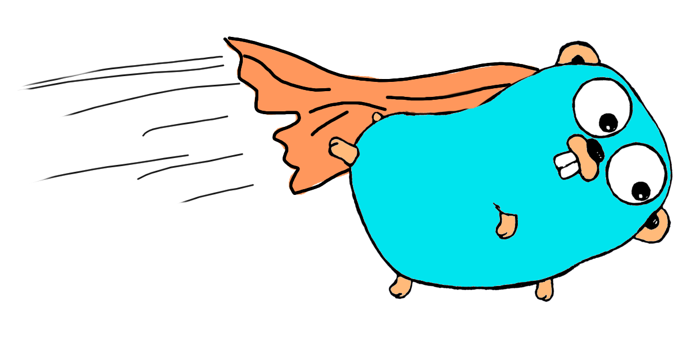
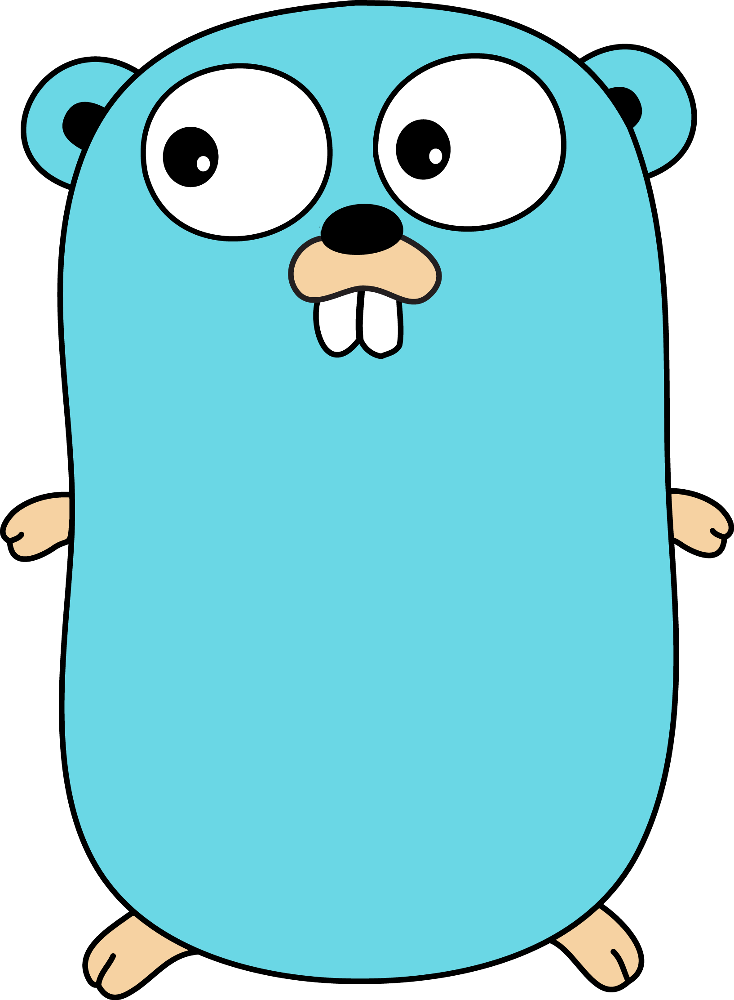

kwk super snippets
Whats in the box?

A UI for the command line which actually makes your snippets discoverable and easy to maintain.
[image of pouch list]
Snippet names are unique and smartly addressable to save you keystrokes.
[gif running without extension and pouch]
Executable snippets for virtually any code, data or info.
[show a list of code animals]
Organise your snippets by project or subject in pouches.
[show a list of pouches]
Search globally or just your snippets
[show search results]
Create ‘apps’ by composing multiple snippets, even in different languages.
[show the details of an app with multiple languages]
Create snippets on the commandline and edit with your favorite editor.
[show snippet open in web-storm]
Auto-updating
[show update notification]
Globally redundant
[list data centers]
Public ‘open source’ snippets and Private
[show gif of locking]
Built with go
kwk has been built with go from top to bottom.
